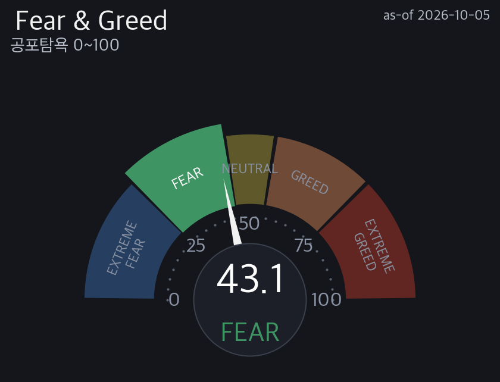
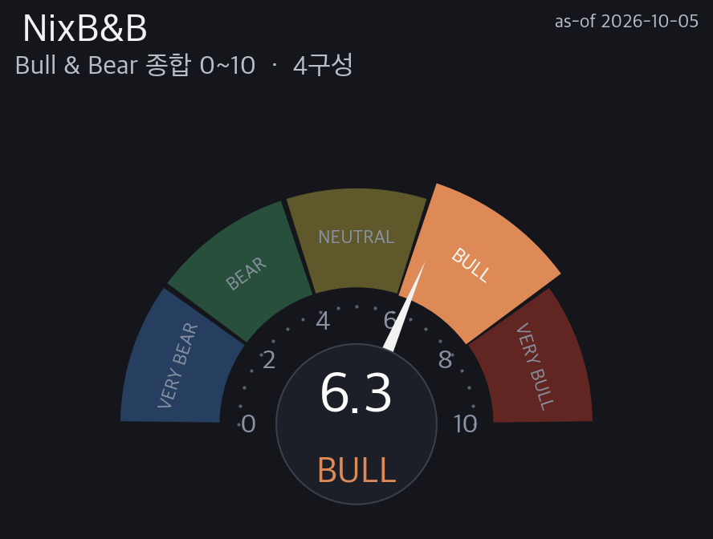
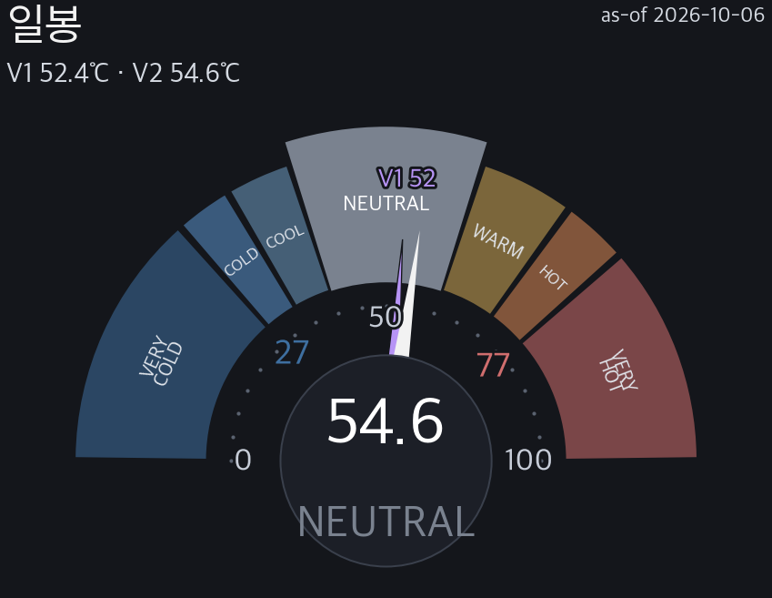
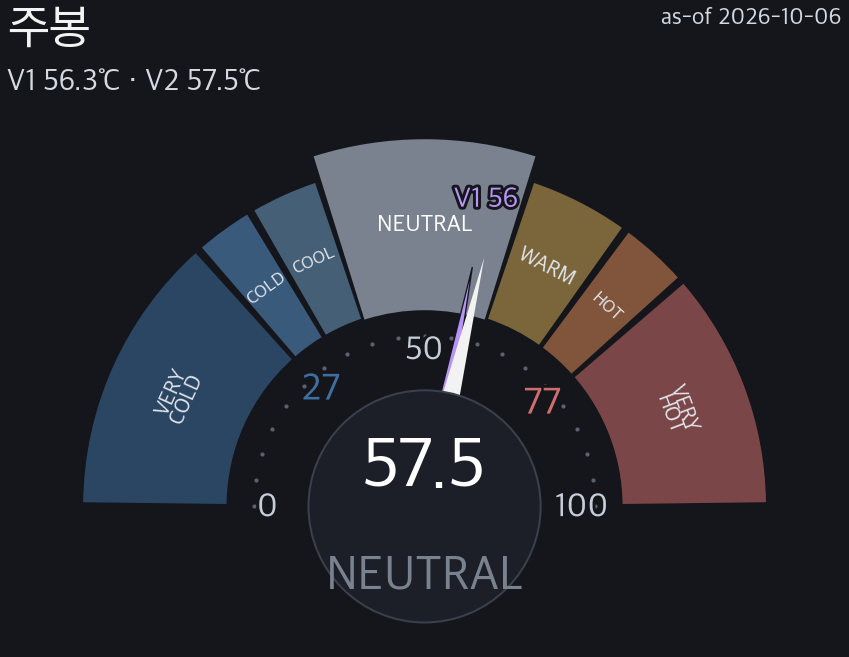
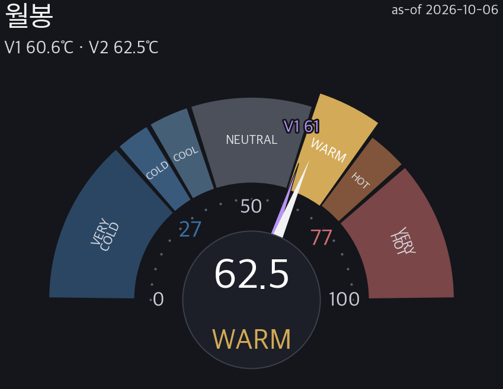
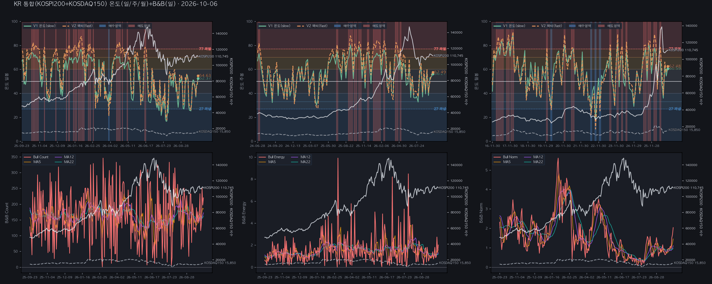
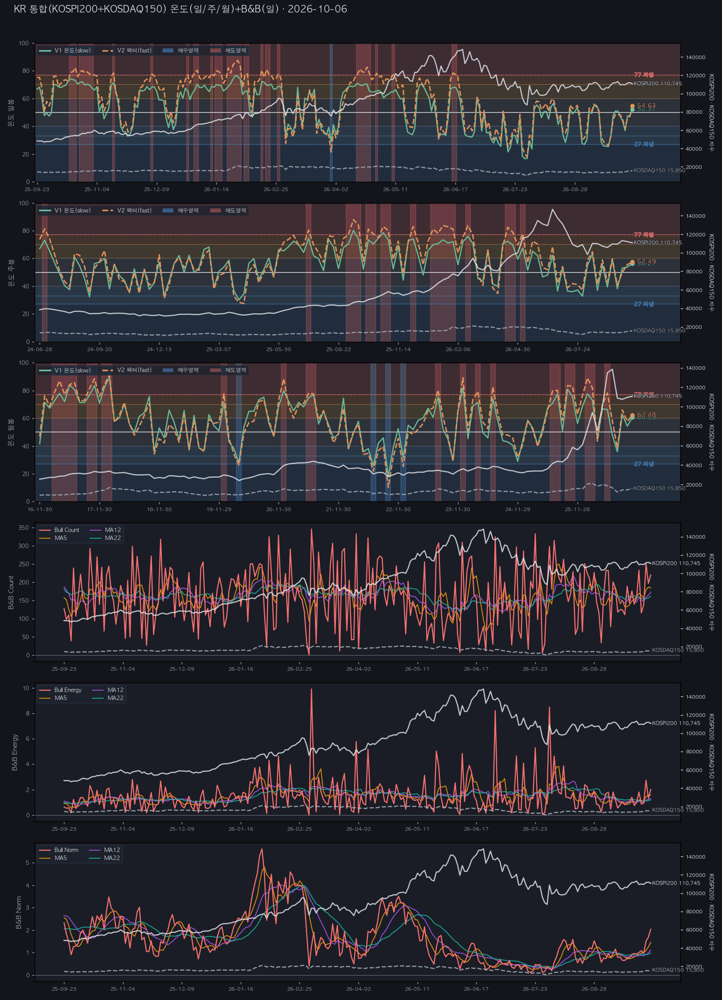
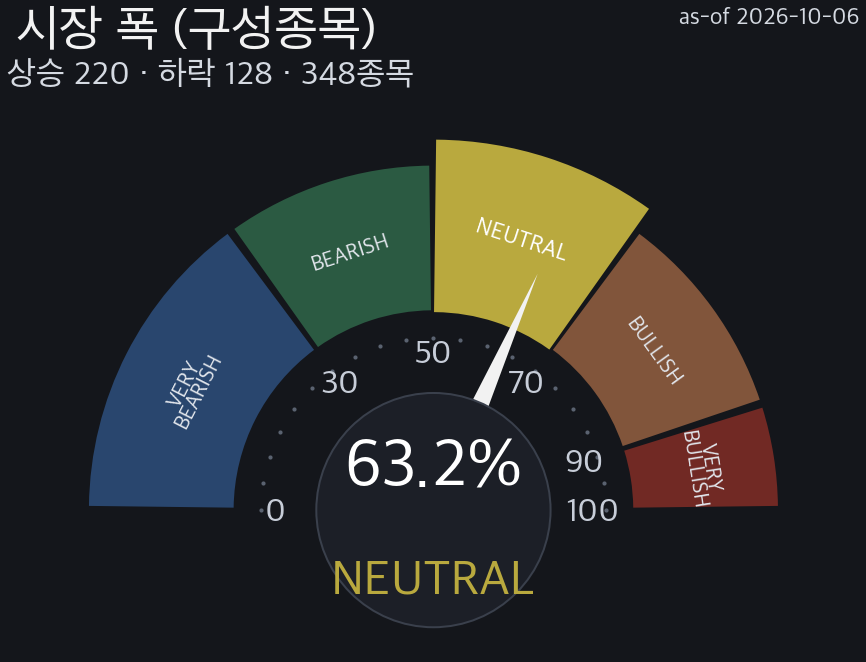

NixStock · KR 마켓온도 · KR 종합
통합 (KS200+KQ150) 마켓온도
완전판 · V1.4 · By Opus 4.8 · 기준 거래일 2026-10-06 종가
정규장 마감2026-10-06🇰🇷 한국 18:12 KST·🇺🇸 미국 05:12 ET
📌 오늘의 핵심 (3줄 요약)
① 온도 통합 (KS200+KQ150) NEUTRAL V2 54.63℃ · V1 52.37℃
② 반전 미armed(대기) — 과열(고점) 트리거 77℃ 까지 22.4℃ 남음
※ 전문용어(h54·ATR22·fwd·neff 등)는 하단 §읽는 법 참조
일봉 등급 (종합 기준) · 지수 고점/저점 반전 관점
🌡️ NEUTRAL · V2 54.63℃🌡️ V1 52.37℃
종합 10팩터 52.37 / KR 11팩터 54.63 · 중립·방향 탐색
★ 종합 온도 NEUTRAL(54.63) — 방향 탐색. 일·주·월 전 구간 상승 추세.
· 시장 폭 63.22% NEUTRAL — 광범 참여.
· 반전: 고점 미armed·verified=True (edge +10.4pp) — 불장 정직.
· forward 백테스트 — 현 존 기준 중기 방향(스냅샷 boot/pred 참조).
★ 결론 (먼저 읽는 한 줄)
통합 (KS200+KQ150) — 관망(방향 대기)
온도 NEUTRAL (종합 10팩터 52.37℃ · 등급 기준 V2 54.63℃) · 반전 미armed(대기)
근거(데이터 → 결론): 일봉 V2 54.63℃ 가 밴드 40–60 에 들어가 NEUTRAL → V2 가 고점선 77·바닥선 27 어느 쪽도 넘지 않아 반전 미발화 → KR 종합 상승 비율 63%(348종목·폭 양호) → 종합 관망(방향 대기)(중립(NEUTRAL) → 방향성 신호 대기).
아래 §0~§7 은 이 결론의 근거이고, 맨 끝 용어 정의·수식·레퍼런스 에 모든 용어와 산식이 있습니다. 확률적 참고 — 투자권유(매수·매도·비중) 아님.
§0 · 실시간 종합 판단 (매크로 · 수급 · FOMC · 반전)
통합 (KS200+KQ150) NEUTRAL V2 54.63℃ · V1 52.37℃ — 온도 NEUTRAL(54.63) 방향 탐색. 폭 63.22% NEUTRAL. 고점 미armed.
📊 매크로 스트립
VKOSPI 한국변동성
40.96 ▼ -1.5%
경계권 · 2026-10-02 기준 · KRX 익일 제공
VIX 美변동성
15.52 ▲ +1.4%
1년저점권 · 2026-10-05
MOVE 채권변동
113.60 ▲ +5.9%
1년고점권 · 2026-10-05
SKEW 꼬리위험
144.88 ▲ +1.5%
중립권 · 2026-10-02
원/달러
1,341.7 ▼ -1.4%
1년저점권 · 2026-10-05
美10Y
5.31 ▲ +0.6%
1년고점권 · 2026-10-05
美30Y
5.67 ▲ +0.6%
1년고점권 · 2026-10-05
HY 하이일드
76.98 ▲ +0.1%
1년저점권 · 2026-10-05
정크본드
92.52 ▲ +0.1%
1년저점권 · 2026-10-05
★VKOSPI=코스피200 변동성(한국판 VIX·향후 30일·KRX OPEN API) vs 미 VIX(S&P500). 존=수준 존(다른 카드의 1년 위치권과 다름). 변동성·금리·환율·크레딧=KR 온도 매크로 원자료(빨강↑/파랑↓). US asof forward-fill.
🌡️ 글로벌 심리 (F&G·BofA·NixB&B)
F&G 美공포탐욕

▲ +3.17% · 공포 · 2026-10-05
BofA B&B

▼ -0.50 · 과매수(매도 신호권) · 2026-09-30 D+6 기준
다음 발표 예정 2026-10-08 D-2~2026-10-09 D-3(추정·발행처 일정 비공개)
다음 발표 예정 2026-10-08 D-2~2026-10-09 D-3(추정·발행처 일정 비공개)
NIX B&B

▲ +0.71 · 중립 · 2026-10-05
F&G=CNN 공포탐욕(0~100)·BofA/NixB&B=불앤베어(0~10). 방향=직전 대비(▲/▼). 미 심리 = KR 리스크 맥락.
💰 수급 3주체 (외국인·기관·개인) · 잠정(18:12)
코스피 3주체 순매수 (억원) · 잠정(18:12)
외국인 -17,643 · 기관 -35 · 개인 +7,536
코스닥 3주체 순매수 (억원) · 잠정(18:12)
외국인 +1,193 · 기관 +1,050 · 개인 -2,132
🔀 코스피200 vs 코스닥150 교차 — 4축 중 3축 반대(외국인·기관·상승비율) · 양극화 SSOT: 동조(온도차 0.6)
외국인 순매수
코스피 -17,643 vs 코스닥 +1,193 억원
반대 순매수 부호 반대
기관 순매수
코스피 -35 vs 코스닥 +1,050 억원
반대 순매수 부호 반대
상승비율(폭)
코스피200 54.0% NEUTRAL (직전比 -18종목) vs 코스닥150 75.3% BULLISH (직전比 +41종목)
반대 상승종목 증감 방향 반대
온도 V2(일봉)
코스피200 NEUTRAL 54.87℃ (일Δ ▲ +6.21) vs 코스닥150 NEUTRAL 54.28℃ (일Δ ▲ +9.56)
동일 방향
규칙형 callout: 4축 중 두 세트가 반대로 갈린 축이 있을 때만 표시. 수급 = 시장 전체(코스피/코스닥 KRX 3주체) · 잠정(18:12) · 폭/온도 = 지수(코스피200/코스닥150) 구성종목·V2 기준. 폭 등급 약세권 <50% · 강세권 ≥70%(SSOT 5단) · 온도 냉/열 = SSOT 7존(NEUTRAL 기준 좌/우). 상태 표시 — 매매 지시·권유 아님.
🏛️ FOMC 촉매
지난 FOMC(2026-09-16 D+20) 25bp 인상 → 3.75~4.00% → 📅 다음 FOMC(2026-10-28 D-22) · 인상확률 21% ▲ 3pp (직전 18% → 21% · 2026-10-05 조사 대비) / 동결확률 77% / 인하확률 2% (실시간 조사 · Kalshi · 조사 2026-10-06 17:32 KST)
🔄 반전 종합
고점 미armed(대기) · 바닥 미armed(대기)
§1 · 온도 대시보드 (일 / 주 / 월)

전일대비 V1 ▲ +5 · V2 ▲ +7.6

전주대비 V1 ▲ +2.5 · V2 ▲ +2

전월대비 V1 ▲ +6.2 · V2 ▲ +4.7
온도 이중선 V1/V2 (일봉·120봉)
칩=전일/전주/전월대비 온도 변화(일·주·월봉 각 · ▲따뜻·▼차가움). 등급=V2(11팩터). 점선=27(과냉)/77(과열) 반전 트리거선. 팩터 산식 비공개.
왜 NEUTRAL 인가 → 일봉 V2 54.63℃ 가 등급 밴드 40–60 구간에 들어가서 NEUTRAL 입니다(밴드는 7단 고정표 · VERY COLD <27 / COLD 27–33 / COOL 33–40 / NEUTRAL 40–60 / WARM 60–70 / HOT 70–77 / VERY HOT ≥77). 일·주 NEUTRAL 일치 · 월 WARM → 시간축 신호가 갈림(단기·장기 온도차 존재). V1 52.37 vs V2 54.63 → V2 가 더 뜨겁게 읽음(폭·신고가·채권변동성 팩터가 과열을 추가로 잡음).
📊 V2 11팩터 기여도 (파랑=온도 하향 ← → 빨강=상향 · 값만 공개·산식 비공개)
-15
-8
0.21
1.67
1.85
2.21
2.58
2.66
3
4.71
9.51
낮은 값(파랑) 팩터가 온도를 낮춤. 하향 상위: kr_54w_high_dist · kr_volatility · us_composite_lag1. V1(10팩터) 52.37 vs V2(11팩터) 54.63 → 차이 +2.3℃.
§1B · 온도 + B&B 6패널 (일/주/월 + Count·Energy·Norm)


상단 온도 일/주/월(V1 초록 실선·V2 주황 점선·27 과냉/77 과열 반전 트리거선·매수매도 세로밴드) · 하단 NixB&B breadth Count/Energy/Norm(차트 = Bull 선 + MA5·12·22 · 우측축 = 해당 지수 레벨 · Bear 포함 수치는 아래 표). 대시보드 캡처 아님 = matplotlib SSOT 생성.
B&B 정량 (일봉 · 기준 2026-10-06 · 348종목 · 등급 NEUTRAL)
| 항목 | Bull(상승) 당일 | Bull MA22 | Bear(하락) 당일 | Bear MA22 |
|---|---|---|---|---|
| Count | 220 | 161.9 | -118 | -176.2 |
| Energy | 2.01 | 1.19 | -0.46 | -1.01 |
| Norm | 2.04 | 0.97 | -1.59 | -2.30 |
값·MA22 = 파이프라인 B&B 산출 컬럼 그대로(렌더 재계산 없음) · Bear 는 원자료 부호(음수=하락측) 유지 · 소스 bull_bear_breadth_d.csv.
§2 · 지수 팬
통합(KR 종합)은 개별 지수 팬을 제공하지 않습니다 — KOSPI200·KOSDAQ150 세트의 §2 팬을 참조하세요 (★최우선 목표=지수별 고점/저점 반전). 통합은 온도·폭·매크로·수급 종합 관점.
§3 · 시장 폭 (구성종목)

온도 breadth 팩터 원자료. 상승 비율 낮음=소수 주도(좁은 강세). KR 빨강=상승.
왜 광범위 참여 인가 → 구성종목 348 개 중 상승 220 · 하락 128 = 상승 비율 63% 라서 → 과반이 함께 상승 = 폭이 뒷받침된 강세(내부 확증 있음). 현재 온도(NEUTRAL) 와 중립 구간이라 폭이 방향을 먼저 알려줌.
§V · 반전 · 검증 (통합 강건성)
통합 KR 온도 강건성(2010-12-22~2026-10-06 트리거 백테스트): 저점 트리거(V2≤27 과냉) edge +12.2pp (hit 68.8% vs base 56.6%·n=64·h54) verified=True · 고점 트리거(V2≥77 roll-over) edge +10.4pp (하락 hit 53.8% vs base 43.4%·n=13·h54) verified=True · 양극단 거동 — 과냉권 저점: 우위 확인(verified) / 과열권 고점: 우위 확인(verified). 개별 지수 고점/저점 반전 확률은 KOSPI200·KOSDAQ150 세트 §V 참조.
§7 · 종합 판정
NEUTRAL V2 54.63℃ · V1 52.37℃ · 고점=매도 경계(평균회귀).
온도 NEUTRAL(54.63) 방향 탐색. 폭 63.22% NEUTRAL. 고점 미armed.
🧭 대응책 (관점 · 투자권유(매수·매도·비중) 아님)
→ 종합 스탠스: 관망(방향 대기) — 중립(NEUTRAL) → 방향성 신호 대기
스탠스=온도존+반전+팬 종합 관점. 확률적 참고이지 매수/매도 추천·타이밍 확정 아님.
과열은 타이밍 신호가 아님. 확률적 참고 — 투자권유(매수·매도·비중) 아님.
■ 읽는 법 (쉽게 · 고점/저점 판단법)
온도 V1/V2: 가격 과열/과냉 0~100℃. 높을수록 뜨겁·후행. V2 낮을수록 저점권·높을수록 고점권.
팬(고점/저점): 방법론이 본 고점(위·빨강)/저점(아래·파랑) 목표. 1차=median(≈50% 도달)·×3=최대.
반전 edge: 과냉/과열 존 진입 후 전방수익이 baseline 대비 유의미한지(2010~). 승률·초과수익으로 검증.
전방 확률: 현재 온도존일 때 과거 h봉 뒤 상승 비율(50%=동전). 조건부 빈도이지 예측 아님. neff<20=소표본 → →값=2010~ base-rate 베이지안 축소(원값·축소 병기·신뢰보정, w=neff/(neff+20)).
수급 3주체: 외국인·기관·개인 순매수(억원). 빨강=순매수·파랑=순매도. 방향 주체 확인용.
마인드셋: 점쟁이 아니라 일기예보 — 방향보다 위험 크기. 확률이지 확정 아님.
■ 이 리포트 적용값 (수식 대입 · 실측)
등급(존) = 7단 고정 밴드 · VERY COLD <27 / COLD 27–33 / COOL 33–40 / NEUTRAL 40–60 / WARM 60–70 / HOT 70–77 / VERY HOT ≥77 (SSOT temp_grade_bands.py · lo ≤ V2 < hi)
상승 비율(breadth) = 상승 종목 / 전체 × 100 = 220 / 348 × 100
일반 정의·수식·레퍼런스는 맨 아래 §G (공통 SSOT) 참조.
§G · 읽는 법 (용어·수식·레퍼런스 = 공통 SSOT copy · 사용한 항목만)
◆ 용어정의
| 용어 | 정의 | 쉽게 읽기 | 구분 |
|---|---|---|---|
| 단위 읽는 법 (% · pp · 점수 차이) | % = 비율·변화율(나눗셈: 오늘 ÷ 어제 − 1, 예 +1.20%). pp = 백분율끼리의 차이(뺄셈: 적중 92% − 기저 51% = +41pp). 점수 차이 = 0~100 점수(온도·F&G 등)끼리의 차이는 단위 없이 숫자만(예: 고점선 77 까지 +3.2). '%p'·'p' 를 붙이지 않는다. | % 는 얼마나 '비율로' 변했나, pp 는 퍼센트끼리 '뺀' 차이, 온도처럼 점수끼리의 차이는 그냥 숫자. | 자체 |
| V1 / V2 | V1=6팩터(US)/10팩터(KR)·V2=9팩터(US)/11팩터(KR)(등급 기준). 자체 지표, 산식은 비공개(값·등급·검증만 공개). | 온도를 재는 두 버전. V2가 등급 판정 기준. | 자체 |
| 통합 vs 지수별 | 통합 = KOSPI200+KOSDAQ150 종합 관점(헤드라인은 종합 6팩터). 지수별 = KOSPI200·KOSDAQ150 각각의 V2·팬·반전(★고점/저점 판정은 지수별 세트가 본체). | 전체 한 장 요약(통합) 과 지수 하나씩 본 것(지수별) 은 쓰임이 다름. | 자체 |
| 온도 존 7단 | VERY COLD<27 / COLD 27~33 / COOL 33~40 / NEUTRAL 40~60 / WARM 60~70 / HOT 70~77 / VERY HOT≥77 | 온도를 7구간으로 나눈 이름표. COLD=싸짐·HOT=비쌈. | 자체 |
| armed | 반전 신호 켜짐(트리거 조건 도달). 미armed=대기. | 반전 신호가 켜졌나(켜짐=armed). | 자체 |
| M1 고정존 | 반전 방법①. 27/77 고정 문턱으로 과냉·과열을 판정. | 정해진 눈금(27·77)을 넘으면 반전 후보로 보는 방법. | 자체 |
| M2 동적존 | 반전 방법②. ZigZag 스윙 고·저점에서 역산한 동적 문턱(표본 외 OOS 검증). | 과거 실제 꼭지·바닥에서 거꾸로 계산한 눈금을 쓰는 방법. | 자체 |
| bull premium | 온도 고점 후에도 상승이 이어지는 거동 = 고점이 매도 신호가 아님. | 뜨거워도 더 오르던 장. 고점=팔 때가 아니라는 뜻. | 자체 |
| 매도 경계 | 온도 고점 후 평균회귀(하락)가 우세한 거동. | 뜨거워진 뒤 되돌아온 경우가 더 많았던 장. 고점에서 조심. | 자체 |
| 팬(1~3차) | 1차=median(≈50% 도달)·3차=최대 폭. 고점·저점 %거리 차이는 방향 신호 아님. | 현재가에서 위/아래로 얼마나 갈 수 있는지 3단계 목표. | 자체 |
| macroATR(22/54) | 전용 매크로 변동성. 22봉(1달)·54봉(분기) 집계 고·저·종가의 ATR. 지평 규모를 반영. | 그 기간에 시장이 보통 얼마나 흔들렸는지의 폭. | 외부 |
| ret | 해당 구간 끝 시점의 평균 수익률(%). | 그 구간이 끝났을 때 평균 몇 % 였나. | 외부 |
| dd | 해당 구간 보유 중 최저점까지의 평균 낙폭(MDD, %). ret 과 순서가 아니라 같은 구간의 두 측정. | 그 구간 중 가장 많이 빠졌을 때의 폭. | 외부 |
| n(표본수) | 검증에 쓴 신호 발화 횟수. n<30(또는 20)=소표본⚠️ 신뢰 하향. | 몇 번 검증했나. 적으면 우연일 수 있음. | 외부 |
| neff(유효 표본·겹침 보정) | 겹치는 창(overlapping window)의 자기상관을 보정한 유효 표본 수. neff<20 = 소표본(⚠︎). | 겹쳐 센 표본을 걷어낸 실제 표본 수. 적으면 우연일 수 있음. | 외부 |
| 95% CI | 블록 부트스트랩으로 만든 신뢰구간. 넓을수록 불확실. | 참값이 들어있을 만한 범위. 넓으면 그만큼 덜 확실. | 외부 |
| 기저(base) | 조건 없이 전 구간에서 오른 비율(%). edge 를 재는 기준선. | 아무 신호 없이 그냥 샀을 때 오를 확률. | — |
| edge(pp) | 신호 적중률 − 무조건 기저 적중률(pp). 기간(horizon)은 표시처별 — 반전 확률 42거래일 · 그 밖(에지 DB·온도 반전 등)은 소스의 h 표기(h5/h12/h22/h54…). +면 무작위보다 우위. | 이 신호가 그냥 찍는 것보다 얼마나 더 맞나(pp). 클수록 강함 · 기간은 표시처 표기를 따름. | 자체 |
| hit(적중률) | 신호 발화 후 예측 방향으로 간 비율(%). 50%=동전. | 신호가 맞은 비율. | 외부 |
| verified(검증됨) | 백테스트에서 edge>0·CI 통과한 방법. CI 미통과·edge 없음=방향 참고만. | 과거 데이터로 실제 맞는지 확인된 신호. | 자체 |
| 신뢰 c | 방향 판정의 통계적 확신도(0~100). 표본이 적거나 50:50 에 가까울수록 낮음. | 그 방향 판단을 얼마나 믿어도 되는지(0~100). | 자체 |
| O / △ / X | 과거 검출 결과. O=성공 · △=진행 중 · X=실패. | 지난 신호가 맞았나(O)·아직 진행중(△)·틀렸나(X). | 자체 |
| 시장폭(폭) | 그날 오른 종목 비율(%). 등급 90 이상 VERY BULLISH·70 이상 BULLISH·50 이상 NEUTRAL·30 이상 BEARISH·30 미만 VERY BEARISH. 낮으면 소수 주도(좁은 강세). | 오른 종목이 전체의 몇 %인가. 낮으면 몇 종목만 올리는 좁은 장. | 외부 |
| 수급 3주체 | 외국인·기관·개인 순매수(억원)=매수대금−매도대금(확정 기준 시각 전 수집 = 잠정 · 이후 수집 = 확정). 양수=순매수·음수=순매도. 방향 플립=최우선 관찰. | 누가 샀고 누가 팔았나. 외국인·기관·개인 세 주체. | 외부 |
| 매크로 스트립 | VIX·MOVE·SKEW·금리·환율(KRW)·크레딧 등 외부 환경 지표. 온도의 배경 조건. | 시장 바깥 환경(변동성·금리·환율) 한 줄 요약. | 외부 |
| horizon h | 앞으로 h 거래일 뒤를 본다는 뜻. h5≈1주 · h12≈2~3주 · h22≈1달 · h54≈2.5달. | 며칠 뒤를 보고 재는지. | — |
| KR 색 관례 | 빨강 = 상승/순매수 · 파랑 = 하락/순매도 (미국 관례와 반대). | 한국은 빨강이 오름, 파랑이 내림 — 미국과 반대. | 외부 |
◆ 수식설명 (외부 공식만 공개 · 🔒자작 수식·로직 비공개)
| 이름 | 식 | 설명 |
|---|---|---|
| 온도 V1 / V2 | 🔒 자체 알고리즘 · 학습방법·산식·가중 비공개 (이름·값·임계·등급·검증 결과 공개) | |
| 온도 존 | 🔒 자체 알고리즘 · 학습방법·산식·가중 비공개 (이름·값·임계·등급·검증 결과 공개) | |
| 팬(목표 레벨) | 🔒 자체 알고리즘 · 학습방법·산식·가중 비공개 (이름·값·임계·등급·검증 결과 공개) | |
| macroATR(N, p) | talib.ATR(N봉 집계 고·저·종가, timeperiod = p) — 1달 N=22·p=5 / 분기 N=54·p=12 | 지평 규모 반영 전용 매크로 변동성 |
| 시장폭 | 당일 상승 종목수 ÷ 전체 × 100 | 등급 경계 90/70/50/30 5단 |
| 수급 | 순매수 = 매수대금 − 매도대금 (억원 · 확정 기준 시각 전 수집 = 잠정, 이후 = 확정) | 양수=순매수·음수=순매도 |
| 전방 수익률 r_fwd | (종가[t+h] − 종가[t]) ÷ 종가[t] | h = horizon(거래일) |
| 낙폭 dd (MDD) | dd = min( (P[t+k] − P[t]) ÷ P[t] ), k = 1..h (구간 보유 중 최저점까지) | ret 과 같은 구간의 다른 측정 |
| 95% 신뢰구간 | 블록(정상) 부트스트랩 B = 2000 회 재표본 → 2.5 / 97.5 백분위 | Politis & Romano (1994) · Efron & Tibshirani (1993) percentile |
| neff (겹침 보정) | neff = N ÷ (1 + 2·Σρ) (ρ = 겹치는 창의 자기상관) | neff < 20 = 소표본 |
| edge | 🔒 자체 알고리즘 · 학습방법·산식·가중 비공개 (이름·값·임계·등급·검증 결과 공개) | |
| 적중률 hit | mean(r_fwd > 0) × 100 (신호 점등 표본만) | 50%=동전 |
| 기저 상승확률 base | mean(r_fwd > 0) × 100 (조건 없는 전 구간) | edge 의 기준선 |
◆ 레퍼런스
| 자료 | 설명 · 링크 |
|---|---|
| 내부 · 표준 | nix_report_master_procedure.md §0b — 전 리포트 3요소 표준(결론 먼저·쉬운 인과·마지막 용어/수식/레퍼런스) |
| 내부 · 지표 읽는 법 | nix_5gauge_reading_guide.md — 온도 V1/V2 · F&G · NixB&B · BofA 5종 읽는 법 |
| 내부 · KR 온도 데이터 규약 | nix_kr_market_temp_data_directive.md — KR 전용 온도 스냅샷 규약 |
| 내부 · 존 7단 밴드 SSOT | src/stock/indicators_calculate/macro/temp_grade_bands.py — 7단 고정 밴드 정본 |
| 수급(확정 기준 시각 이후 = 확정)·지수 | KRX 정보데이터시스템 · http://data.krx.co.kr |
| 외부 · 거시 통계 | 한국은행 ECOS · https://ecos.bok.or.kr |
| 외부 · ATR 원저 | Average True Range — J. Welles Wilder Jr., New Concepts in Technical Trading Systems (1978) · https://en.wikipedia.org/wiki/Average_true_range |
| 지표 구현 | TA-Lib 함수 목록 · https://ta-lib.org/functions/ |
| 외부 · MDD 정의 | Maximum Drawdown (Drawdown, economics) · https://en.wikipedia.org/wiki/Drawdown_(economics) |
| 외부 · 부트스트랩 원저 | Politis & Romano (1994) The Stationary Bootstrap, JASA 89:1303 · https://doi.org/10.1080/01621459.1994.10476870 |
| 문헌 · 링크 없음 | Politis & White (2004) Automatic block-length selection · Efron & Tibshirani (1993) percentile CI · Magdon-Ismail & Atiya (2004) Maximum Drawdown |
| 가격 데이터 | Yahoo Finance |
| 확률 시장 | Polymarket (FOMC 등 이벤트 베팅) · https://polymarket.com |
| 자체 검증 | NixStock 추이·반전 백테스트 (본문에 n·적중·edge 그대로 표기) · 자작 알고리즘 비공개 |
데이터: KR 마켓온도 스냅샷(온도 팩터·팬 price_levels·반전 methods·detections 2010~·zone_forward 부트스트랩·forward_prob) · 구성종목 breadth · 수급 KRX · 매크로 스냅샷. 온도 산출 팩터의 조건식·가중·대표지수 비공개(팩터명·값·존·검증결과만). KR 빨강↑/파랑↓. 확률적 참고 자료 — 예측 · 투자권유(매수·매도·비중) 아님. ⓒ NixStock · 무단 복제 금지